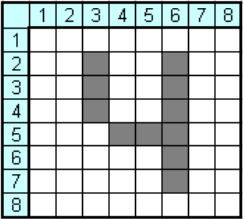
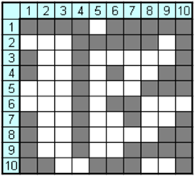
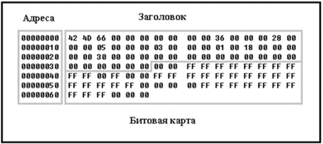

2 Криптографические и стеганографические методы защиты
Симметричный тип шифрования основывается на использовании одного и того же ключа для шифрования и дешифрования сообщения. Для преобразования открытого текста используется функция шифрования E, которая создает недоступную для прочтения криптограмму С. На приемной стороне используется функция дешифрования D, которая восстанавливает открытое сообщение М. Криптостойкость симметричных шифров основывается на использовании секретного ключа К, который определяет конкретный вид преобразований. Результаты шифрования и дешифрования зависят от использованного ключа. Все преобразования должны выполняться таким образом, чтобы на приемной стороне было принято сообщение, совпадающее с отправленным
Ассиметричное шифрование является более продвинутой технологией, чем симметричное, так как позволяет использовать разные ключи для шифрования и дешифрования сообщений. При использовании ассиметричных шифров (шифры с открытым ключом) на передающей стороне используется открытый ключ К1, который публикуется в доступных источниках. Функция шифрования EK1(M) преобразует открытый текст M в криптограмму С. На приемной стороне используется секретный ключ К2, который функционально связан с открытым ключом К1. Функция дешифрования DK2(C) восстанавливает открытое сообщение М. Весь процесс передачи шифрованного сообщения по схеме с двумя ключами описывается соотношением: DK2(EK1(M)) = M. Криптостойкость ассиметричных алгоритмов базируется на использовании секретного ключа, а не на использовании секретного алгоритма шифрования. Алгоритм шифрования (шифр) подвергается детальному публичному анализу.
Сочетание сильных сторон симметричных и асимметричных алгоритмов позволила создать гибридную криптографическую систему. Гибридная криптосистема объединяет преимущества симметричного и асимметричного шифрования. В гибридной криптосистеме используется симметричный алгоритм для шифрования открытого текста и асимметричный алгоритм для шифрования симметричного ключа.
2.1 Криптографические методы защиты
С появлением компьютерных сетей стала актуальной проблема защиты информации. Основная цель - предотвращение утечки, изменения или уничтожения ценной информации. Сегодня используются современные криптосистемы для обеспечения безопасности передачи информации.
Однако, защита и шифрование информации интересовало человечество еще с древних времен. В Древней Греции (II в. до н.э.) был известен метод шифрования с использованием квадрата Полибия, который представлял собой таблицу из пяти строк и пяти столбцов, пронумерованных цифрами от 1 до 5. Каждая клетка таблицы содержала одну букву, и каждой букве соответствовала пара цифр, обозначающих номер строки и столбца. Шифрование заключалось в замене буквы на пару цифр. Расположение символов в таблице является секретной информацией (ключом). Пример такого ключа продемонстрирован, но в русском варианте.
Существует наука криптология, которая занимается проблемами защиты информации. Она делится на два направления - криптографию и криптоанализ. Криптография занимается методами обеспечения конфиденциальности и аутентичности информации, а криптоанализ - разработкой методов дешифрования без знания секретного ключа.
Шифрование представляет собой преобразование информации с использованием секретной информации - ключа, в результате чего исходный текст становится нечитаемым без дешифрирующего преобразования. Расшифрование - это обратный процесс, а дешифрование - получение открытого сообщения из криптограммы без знания ключа.
Во втором случае, получатель передает отправителю открытый ключ по открытому каналу. Отправитель использует этот ключ для шифрования информации. Получатель дешифрует информацию с помощью второго секретного ключа. Криптоаналитик противника не сможет расшифровать закрытое сообщение, так как для этого требуется второй секретный ключ, который невозможно вычислить по открытому ключу. Схема такого протокола показана на рисунке 4.
Когда оценивают эффективность шифра, обычно руководствуются правилом голландца Огюста Керкгоффса. Согласно этому правилу, стойкость шифра определяется только секретностью ключа, а не детальностью алгоритмов шифрования. Криптостойкость - это характеристика шифра, которая определяет его устойчивость к дешифрованию без знания ключа. Современные шифры можно разделить на четыре большие группы: методы замены (подстановки), перестановок, аддитивные (гаммирования) и комбинированные методы.
В шифре перестановок буквы открытого текста остаются без изменений, но перемещаются на другие позиции. Это можно видеть в шифровании с помощью скиталы.
В шифре замены позиции букв в шифровке остаются теми же, что и у открытого текста, но символы текста заменяются символами другого алфавита, например, квадратом Полибия. Здесь буквы заменяются цифрами.
В аддитивном методе буквы алфавита заменяются числами, к которым добавляются числа из секретной псевдослучайной числовой последовательности (гаммы). Гамма меняется в зависимости от использованного ключа. Обычно используется операция "Исключающее ИЛИ" для шифрования. При дешифровании гамма накладывается на зашифрованные данные. Метод гаммирования широко используется в военных криптографических системах и называется поточными шифрами.
Комбинированные методы предполагают использование нескольких методов для шифрования сообщения, например, сначала замена символов, а затем их перестановка.
Идея защиты информации с использованием графических матриц заключается в представлении символов в виде матриц из черных и белых точек. При шифровании точки в матрицах перемещаются или заменяются в соответствии с ключом. Зашифрованная информация разбивается на биты, которые распределяются по разным контейнерам. Для обеспечения равномерного распределения битовых последовательностей, изображения символов формируются из одинакового числа черных и белых пикселей. Распределение битов происходит случайным образом по контейнерам с использованием секретного ключа. Так же используются контейнеры с ненастоящей информацией, необходимые для отвлечения криптоаналитика. Максимальная степень защиты достигается, когда вместо символов используется псевдослучайная мозаика. При утечке информации о таблице замен возможно проведение криптоанализа.
Рассмотрим пример преобразования. Изначально мы имеем матрицу 8х8.
Анализ изображений показывает, что для разных символов требуется разное количество пикселей. Например, буква "Щ" содержит 29 черных точек, "Б" - 23, "Г" - 12, "Ж" - 24. Это различие может быть полезным для криптоаналитиков, которые могут попытаться восстановить передаваемые символы, подсчитывая число черных пикселей в каждой матрице. Поэтому добавим букве рамку и отвлекающие пиксели. При таком преобразовании буква «Г» будет выглядеть следующим образом.
Однако, буква все равно различима, поэтому матрицы полученных символов необходимо трансформировать. Трансформация матрицы может быть осуществлена разными методами: менять местами группы пикселей, перемешивание строк и столбцов, метод цикличных сдвигов, генерация псевдослучайных целых, на основе которых произойдет распределение пикселей, метод замены и т. д.
На рисунке показан метод цикличного сдвига. Сдвиг с помощью сдвиговых регистров реализуется с использованием переключаемых сетей для повышения быстродействия. Результат циклического сдвига виден в строке 3, где исходная матрица изображена слева, а результат - справа. Содержимое строки 3 сдвинуто циклически влево на 4 позиции. Простой сдвиг влево показан в строке 10, где содержимое сдвинуто на две позиции влево без перехода от первого к последнему столбцу. Слово «циклический» означает, что крайние столбцы 1 и 12 являются, как бы соседними (смежными).
Так же существует вариация со сдвигом вниз или вверх
Можно использовать метод гаммирования, результат показан на рисунке 10. для трансформации графической матрицы. При этом нечетные строки суммируются с числом 10100110, а четные строки - с числом 00011011. Разностные матрицы между исходными и преобразованными матрицами могут быть одинаковыми (две крайние справа матрицы), что может помочь криптоаналитикам. На третьей и четвертой матрице видно, что последние строки совпадают, что дает зацепку криптоаналитикам. Поэтому важно, чтобы период гаммы был достаточно большим и распределение единиц и нулей в гамме было равномерным.
Если гамма состоит только из нулей, матрица не изменяется, а если состоит только из единиц, получается негатив, что показано на рисунке 12. Отклонение от равномерного распределения единиц и нулей увеличивает шансы на взлом шифра.
Описанные преобразования графических матриц удобно комментировать, используя математические понятия: матрица, вектор-строка, векторстолбец. С помощью матрицы МЕ представим букву «Е». С помощью матрицы MRamka сформируем изображение рамки, которое обрамляет изображение символа.
Наложим эти две матрицы друг на друга и получим матрицу MER. MER = ME + MRamka.
Осуществим перестановку вектор - столбцов матрицы MER Если изначальный ключ был 1-2-3-4-5-6-7-8, то теперь у матрицы будут перемещаны столбцы в соответствии с ключом 5-3-7-6-8-2-1-4. Математически эти формулы записываются так.
При криптоанализе методом перебора всех возможных ключей восстанавливаемые матрицы придётся анализировать с помощью автоматических устройств. Устройство распознавания образов должно во множестве 47 точек графической матрицы мгновенно «увидеть» (выделить, вычислить) замаскированный символ. Однако появление даже нескольких маскирующих точек приводят к снижению надёжности автоматического распознавания символов. Демонстрация этой мысли показана на рисунке 12, на котором добавление всего 9-ти символов полностью исказило чтение символов.
Таким образом, корректируя и усложняя метод шифрования графическими матрицами, можно добиться того, что криптоаналитики и автоматические системы чтения не смогут подобрать правильный ключ для расшифровки информации.
Существует много методов шифрования с высокой криптостойкостью. Один из них - метод гаммирования. Он основан на замене символов открытого текста на числа и их сложении с псевдослучайными числами, называемыми "гаммой". Гамма известна только доверенным лицам на передающей и приемной сторонах.
Есть методы взлома этого шифра. Шифр можно скомпрометировать, если гамма используется некачественно или повторяется для разных сообщений.
Еще одним уязвимым элементом этого шифра является операция Исключающее ИЛИ, используемая для зашифрования. Известно, что если в этой операции есть четное число одинаковых слагаемых, они уничтожаются. Поэтому, если гамма повторяется, ее можно уничтожить, выполнив операцию Исключающее ИЛИ над символами криптограммы с одинаковыми значениями гаммы.
Пример неправильного использования метода гаммирования был обнаружен в операционной системе Windows 95. Одна и та же гамма использовалась несколько раз для шифрования данных.
Разность открытых текстов может быть подвержена криптоанализу путем учета статистических закономерностей или использования известных особенностей текстов из других источников. Часть текста можно угадать на основе стандартной формы документов.
Если сделать предположение о начале одного из сообщений, легко дешифровать первые буквы другого сообщения. Приведен пример криптоанализа двух зашифрованных сообщений с одинаковой гаммой.
Криптостойкость аддитивного шифра можно улучшить, используя несколько различных шифрующих операций в течение одного сеанса связи. В этой криптосистеме операции преобразования, выполняемые над открытым текстом и криптограммой, изменяются синхронно с изменением значения гаммы. Структурная схема криптографической системы с управляемыми операциями шифрования показана на рисунке 13.
Передача и прием данных в системе осуществлялись с использованием двух арифметико-логических устройств 74281J (АЛУ). Открытый текст и гамма подавались на входы устройств. Вид выполняемой операции на передаче задавался преобразователем кода ПК1, а на приеме - преобразователем кода ПК2. Криптограмма формировалась на выходе первого устройства, а расшифрование производилось на втором устройстве.
В качестве шифрующих преобразований можно использовать различные логические и арифметические операции, а также математические функции и их комбинации. Они показаны в таблице 2.
Одноалфавитные шифры не криптостойки из-за статистической устойчивости появления букв в открытом тексте. На рисунке 14 показана гистограмма распределения частоты появления строчных русских букв в книге про электронные вычислительные машины. На рисунке 14 по горизонтальной оси - номера букв в алфавите, по вертикальной - частоты появления строчных букв в тексте. Гистограмма получена путём обработки текста, содержащего 1,05 миллиона символов, среди которых было 786 тысяч русских строчных букв. Абсолютная частота появления букв отличается большой неравномерностью, что позволяет криптоаналитику успешно произвести дешифрацию длинной криптограммы, созданной методом одноалфавитной замены.
Многоалфавитные шифры повышают криптостойкость, но могут быть взломаны, так как сохраняют статистическую картину распределения частоты символов. Основная идея многоалфавитного адаптивного шифра - формирование криптограммы в виде равномерной смеси вещественных чисел для достижения равномерности распределения чисел в криптограмме. Для этого проводится анализ распределения чисел шифрограммы и коррекция шифра для приближения к равномерному распределению. Многоалфавитное шифрование предполагает многократное использование символов открытого текста на различных участках числовой оси.
В таблице 3 приведён фрагмент некоторой упрощённой таблицы многоалфавитной замены. При этом считается, что буква «е» встречается в открытом тексте чаще других, а буква «д» - реже других. По этой причине для буквы «е» выделено 6 интервалов многоалфавитной замены, а для буквы «д» - только 2.
Шифрование с помощью таблицы многоалфавитной замены (ТМЗ) может быть осуществлено различными способами. Каждая буква может быть заменена любым числом из заданных интервалов. Предположим, что в шифре после замены происходит интегральное преобразование полученного числа, выбирая предел интегрирования случайным образом. Целью является попадание числа в зону наибольшего провала на гистограмме. Для адаптивного шифра необходимо решать обратную задачу шифрования, выбирая предел интегрирования, который попадает в заданный интервал гистограммы. Гистограмма обновляется после каждого зашифрованного символа, выделяя максимальное значение, минимальное значение и провалы. Формирование криптограммы направлено на выравнивание имеющегося распределения. Эта идея показана на рисунке 15.
Предположим, что наибольший провал на гистограмме наблюдается в интервале чисел [C_i,C_(i+1)] Пусть при этом для интегрального преобразования используется некоторая подынтегральная функция f(x), показано на формуле 8.
Для уменьшения глубины впадины генерируется случайное число a из этого интервала. Затем, используя таблицу многоалфавитной замены, определяется значение интеграла I, соответствующее шифруемому символу. Зная значение a и I, находится значение верхнего предела интегрирования b. Числа a и b передаются в линию и являются элементами криптограммы. На приёмной стороне, с помощью секретного ключа, известны вид преобразования и конфигурация таблицы замены, поэтому процесс дешифрации не вызывает затруднений. Он сводится к вычислению интеграла по известным значениям a и b и определению символа по таблице замены. Величина а обязательно попадает в зону наибольшего провала, а верхний предел b может попасть в одну из зон гистограммы.
Рассмотрим порядок формирования таблицы многоалфавитной замены:
1. Задаем длину открытого текста, который будет шифроваться. Пусть Smax = 50000 символов. Тогда число вещественных чисел, из которых будет состоять криптограмма, n = 100000.
2. Оцениваем число интервалов на гистограмме по формуле (9). Для выбранного значения Smax, число интервалов k = 17.6.
3. Определяем общее число интервалов в таблице многоалфавитной замены t, которое должно быть на один-два порядка больше числа k. Также, число интервалов в таблице должно быть в 3-4 раза больше числа символов в алфавите открытого текста. Примем t = 1000.
4. Находим сумму нормированных частот символов открытого текста. Здесь r - число символов в алфавите открытого текста по формуле 10.
Здесь r – число символов в алфавите открытого текста (r = 256 при использовании всех символов таблицы CP-1251 и r = 33 при использовании только русских строчных или заглавных букв); gi- нормированная частота.
5. Вычисляем число интервалов замен для каждого символа алфавита открытого текста по формуле 11.
6. Задаем диапазон и положение гистограммы на числовой оси, а также ширину и положение таблицы многоалфавитной замены.
7. Составляем таблицу многоалфавитной замены, где ширина каждого интервала замены равна заданному значению, а число интервалов замен равно t. Каждому интервалу замены ставим в соответствие символ алфавита открытого текста.
Конфигурация таблицы многоалфавитной замены и вид подынтегральной функции являются элементами секретного ключа.
В алгоритме RSA используются два ключа: один для шифрования, другой для расшифрования. Ключ шифрования основан на произведении простых чисел, а ключ расшифрования - на самих простых числах. Факторизация - операция разложения числа на множители.
Термин "необратимые" функции можно заменить на "быстро необратимые" функции. Они могут быть обращены, но потребуется много времени.
Клод Шеннон предложил разрабатывать новый шифр таким образом, чтобы его раскрытие было эквивалентно решению сложной математической задачи.
В асимметричных криптографических системах используются длинные ключи. Это увеличивает время шифрования и генерацию ключей, но позволяет передавать открытые ключи по незащищенным каналам связи. Например, банкир может передать открытый ключ нескольким вкладчикам, которые могут зашифровать свои сообщения этим ключом, но только банкир сможет их прочитать с помощью секретного ключа.
В отличие от криптографии, которая превращает открытый текст в нечитаемый, стеганография позволяет скрыть передаваемое сообщение. Удобнее всего для скрытой передачи использовать цифровые данные.
2.2 Стеганографические методы защиты
Стеганография изучает методы передачи секретных сообщений, которые скрывают факт передачи информации. Криптография превращает открытый текст в нечитаемую шифрограмму, которая передается по открытому каналу связи. Факт передачи шифрограммы не скрывается от противника.
Стеганография нацелена на сокрытие факта передачи информации. Сообщение помещается внутрь контейнера таким образом, чтобы его наличие было сложно заметить. Стеганография чаще всего используется совместно с криптографией.
В настоящее время чаще используются электронные контейнеры, в которых может быть скрыт текст, рисунок, звук и видео
Контейнеры могут быть статическими или динамическими. Многие методы сокрытия информации основываются на обмане органов чувств человека. Цель стеганографии - обеспечить незаметную передачу конфиденциальной информаци. Контейнером для скрытия информации может стать почти любой предмет: от Midi или text файла, до листка бумаги или стиха (Например, акростих, телестих, месостих).
Фотографии и рисунки могут быть использованы для скрытой передачи информации. Сегодня фотоаппараты доступны у большинства взрослых людей, и количество фотографий, появляющихся ежедневно, оценивается миллиардами штук. Примеры скрытой передачи информации включают использование байтов для кодирования букв и использование наличия или отсутствия головных уборов, цвета одежды и положения рук в качестве отличительных признаков. Кроме того, метки на рамке рисунка и окрашивание пикселей с помощью псевдослучайных чисел также могут быть использованы для скрытой передачи информации. Шифрование текста и использование секретного ключа повышает криптостойкость скрытого сообщения. Даже лампочки на ёлочной гирлянде и фон в виде пёстрой мозаики могут быть использованы для скрытия информации.
Возможная реализация скрытой передачи информации в графическом редакторе: пишется секретный текст буквами определенного цвета на белом листе, поверх текста наносится сетка хаотической формы с незначительно отличающимся цветом от цвета текста. Для извлечения скрытого текста выполняется заливка сетки белой краской. Это показано на рисунке 20
Также возможна скрытая передача одного мультимедийного продукта в другом мультимедийном контейнере. Примером является стегосистема, которая делит исходный файл и файл контейнер на блоки данных одинакового размера, сравнивает каждый блок данных скрываемого файла с блоками данных контейнера, определяет номера индексов наиболее сходных блоков данных в контейнере и скрывает эти индексы в младших разрядах младших слов контейнера. Это продемонстрировано на рисунке 21.
Идея скрытой передачи одного рисунка в другом рисунке состоит в замене блоков передаваемого рисунка на блоки контейнера с наибольшим сходством. На принимающей стороне передаются номера блоков контейнера в нужной последовательности.
Этот способ скрытой передачи информации также может быть использован для звуковых файлов, где отыскиваются сходные отсчеты и передаются номера отсчетов контейнера. Это показано на рисунке 22.
Таким образом, криптография и стеганография решают сходные задачи, но разными способами. Криптография превращает секретное сообщение в непонятный для непосвящённого человека текст, а стеганография делает секретное сообщение невидимым.
Многие способы скрытой передачи информации основаны на цифровой форме мультимедийных файлов. Последние биты отсчетов не влияют на качество продукта, так как содержат шумы преобразования. Современные устройства работают с цифровыми сигналами двух уровней: логической единицей и логическим нулем. Результаты цифровых устройств состоят из преобразований цифровых сигналов. Исходные сигналы имеют аналоговую природу, в то время как цифровые сигналы изменяются только в определенные моменты времени и принимают заранее обусловленные значения. Для преобразования аналогового сигнала в цифровой требуется дискретизация, квантование и кодирование значений. Это приводит к небольшому искажению сигнала. Дискретизация заменяет непрерывный сигнал отдельными отсчетами.
На рисунке 23 схематично показан процесс преобразования аналогового (например, звукового) сигнала в цифровой сигнал. Подобный аналоговый сигнал можно наблюдать на выходе микрофона при записи речи, фоточувствительного элемента при изменении освещённости, датчика давления перед грозой и т.д.
Цифровой сигнал имеет пять значений по уровню. Качество преобразования низкое. Из рисунка видно, что изменение сигнала возможно только в некоторые моменты времени (одиннадцать моментов). Непрерывный сигнал представляется последовательностью чисел. Цифровой сигнал представляется двоичными числами. Чем больше разрядов и чаще отсчёты, тем точнее преобразование. Замена непрерывного сигнала дискретным и квантованным будет сопровождаться искажениями и шумами.
Цифровые сигналы могут содержать шумы из-за различных причин, включая электромагнитные помехи, изменение напряжения в сети питания, физические движения и изменения цвета объектов. Чтобы преобразовать аналоговый сигнал в цифровой, используется аналого-цифровой преобразователь (АЦП), а для обратного преобразования - цифроаналоговый преобразователь (ЦАП). Это показано на рисунке 24.
Качество аналогово-цифрового преобразования определяется разрешением - количеством уровней квантования цифрового сигнала. Восьмиразрядная выборка дает 256 уровней, а шестнадцатиразрядная - 65 536 уровней. Частота дискретизации - количество преобразований аналогового сигнала в цифровой в секунду, измеряется в килогерцах. Преобразование аналогового изображения в цифровой сигнал происходит с помощью матрицы, содержащей миллионы светочувствительных элементов. Цифровой сигнал содержит шумы, которые проявляются в последнем бите цифрового отсчета. Это позволяет скрытно передавать информацию в электронных контейнерах. При использовании компьютерной стеганографии часто используется информация, скрытая в последнем значащем бите. Шумы квантования случайным образом изменяют последний бит каждого отсчета.
Таким образом, можно подменять последние значащие биты на информацию, которую надо скрыть и безопасно передавать информацию
Следующий алгоритм скрытия информации рассмотрим на примере формата файла BMP. Дамп памяти для рисунка этого формата имеет внутри себя ячейки памяти, в которые записывается различная информация. Например, в ячейке O2H записано число 66H, что говорит о размере файла в 102 байта. А в ячейке OAH написано 36Н, что говорит о начале записи картинки в ячейке 36Н.
Таким же способом в дампе присутствует информация о разрешении картинки, глубине цвета, число плоскостей. А далее в дампе идёт закодированные цвета картинки. Однако вес файла указывается всегда чуть больше, чем на самом деле. Это говорит о присутствии в файле пустых ячеек памяти, которые не выводятся на экран и не показывается в информации о картинке. И в эти ячейки можно вписать секретную информацию, которую можно будет увидеть только после анализа кода изображения.
Внедрим в этот контейнер слово «Аллегория». В шестнадцатеричной системе счисления это слово будет выглядеть так: C0 EB EB E5 E3 EE F0 E8 FF
В итоге внедрения информации дамп будет выглядеть следующим образом (Рисунок 26)

Таким образом, изображение стало контейнером для скрытой информации. Подобным образом можно вставить свою информацию и в файл форматом WAV.